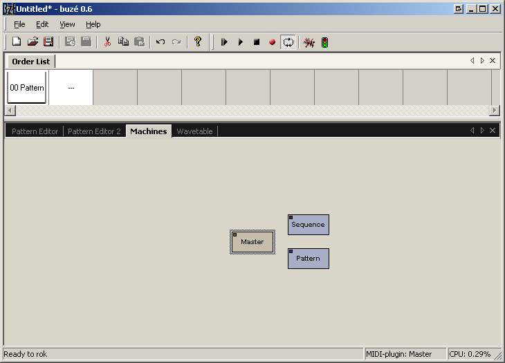
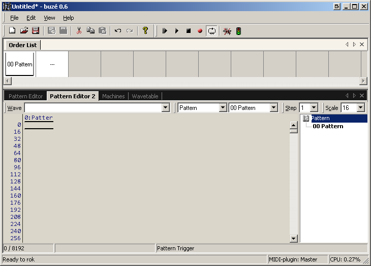
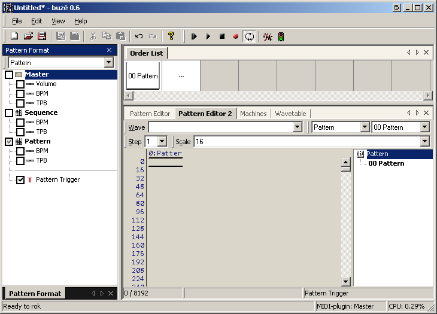

When starting a new project, either upon program startup or selecting File -> New from the menu, an empty, default song is created from a template. The template chosen for the default document depends on the Preferences setting for "Create Default Pattern Player".
The default setting for "Create Default Pattern Player" is "Off", which creates the simplest possible setup: a Master plugin, an empty pattern format and pattern of length 16. This mode is suitable if there is no need or desire for immediate pattern nesting, and/or maximum control. Naturally, the user can create pattern players manually when the need to use nested patterns arises.
When "Create Default Pattern Player" is turned on, the default document is prepared for using nested patterns. In addition to the master, a Pattern Player plugin is created, its trigger parameter is added on the default pattern format, and the default pattern length is set to 8192. This default pattern is ready for nested pattern sequencing.
  
A pattern format is, in its simplest form, a list of selected parameters from any of the plugins in the project. This list defines what columns will be visible in the pattern editor. There can be any number of pattern formats in a project, and any number of patterns based on each of the pattern formats. The user decides length and resolution per pattern.
Patterns can be triggered from the order list, or from trigger-columns in other patterns.
The order list contains a list of patterns to play in order, with looping points.
The sequence plugin is a user interface "handle" to control the tempo of patterns playing in the order list. There should never be more than one Sequence plugin in a project.
A Pattern Player plugin has global parameters for tempo and track (voice) parameters for pattern triggers and transposing. Each track (voice) can play and transpose a pattern. By adding more tracks (voices), it can play more patterns.
By default, a pattern player inherits its tempo from the global sequence tempo, but offers parameters for setting BPM and TPB independent of the global tempo. There can be more than one pattern player in a project, each with optionally different tempo.